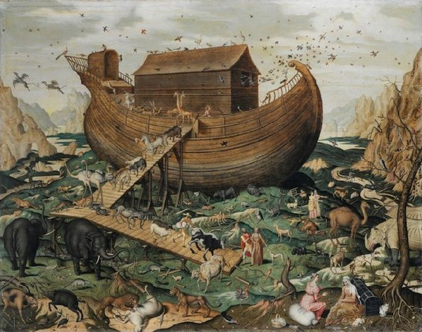
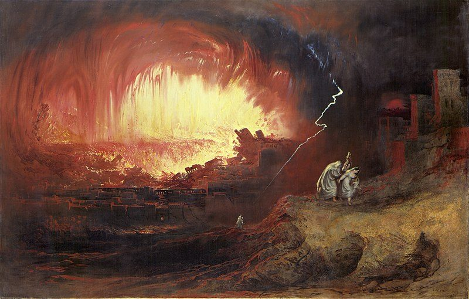
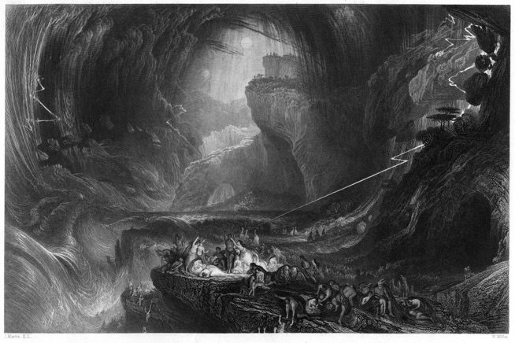
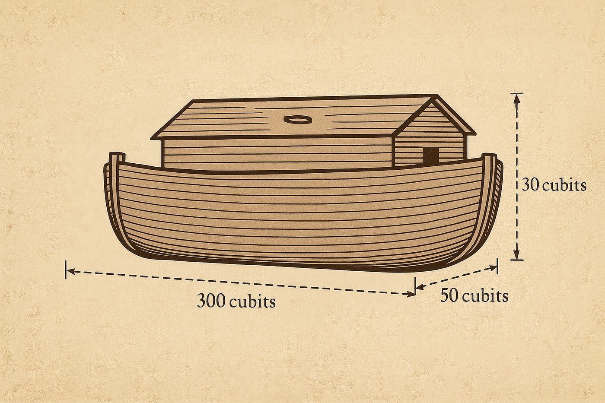
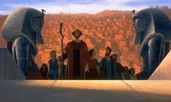
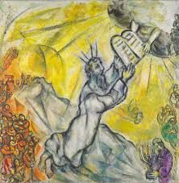
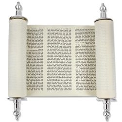

Noa’h 5786 : Trouver les justes mots
Noa’h le juste – seul au monde
Chaque année, lorsque revient la section de Noa’h, un même sentiment d’ambivalence nous traverse.
D’un côté, nous sommes impressionnés par la droiture de ce personnage : « נֹחַ אִישׁ צַדִּיק תָּמִים הָיָה בְּדֹרֹתָיו » — « Noa’h était un homme juste, intègre dans ses générations » (Béréchit 6,9), ordonné par D. lui-même il aura à charge la sauvegarde du monde dans le tumulte des eaux destructrices du déluge. C’est un juste, un tsadik, le monde sera sauvé grâce à lui. Il devient le deuxième père de l’humanité, celui qui sauvegardera la création divine. Mais de l’autre côté, on peut se demander pourquoi Noa’h est le seul à être sauvé ? Pourquoi n’entraine-t-il personne (hormis ses enfants, leurs femmes et sa propre femme) ? Pourquoi le texte ne mentionne-t-il aucun élève, aucun disciple, aucun voisin convaincu ? Pourquoi l’humanité entière disparaît-elle sans que ce juste n’ait su ou pu changer son époque ? |
 |
|---|
Le midrash nous enseigne que Noa’h va construire pendant 120 ans l’arche afin de lui laisser le temps d’influencer sa génération. Les habitants venaient alors le voir et se moquaient : « Vieil homme, que fais-tu là ?! » Et Noa’h répondait : « D.ieu va faire venir un déluge sur le monde. Repentez-vous pendant qu’il est encore temps. » Mais ils riaient plus fort encore. Certains le traitaient de fou, d’autres de prophète de malheur. Ils continuaient à vivre comme si rien ne devait changer.
Les conséquences seront dramatiques et à la sortie de l’arche en constatant la destruction du monde la mort de ses semblables, (bien que ce ne soit pas écrit comme cela mais je force le texte) il semble en perdre la raison. Il plante alors une vigne, qui grandit brutalement et produit du vin miraculeusement, il s’enivre et se perd dans l’ivresse de la destruction du monde…
Le « juste » du début de la paracha devient « l’homme de la terre » (Béréchit 9,20).,
Le silence du juste
L’un des premiers Rachi de notre paracha exprime cette tension sur le personnage de Noa’h en le comparant à autre père de l’humanité : Avraham – le Père des nations et cite le midrash rabba sur berechit (30,10)
« … Cela est comparable à un prince qui avait deux fils, l’un plus âgé et l’autre plus jeune. Il dit au plus jeune : « Marche avec moi », et il dit à l’aîné : « Viens et marche devant moi. » Ainsi, à propos d’Abraham, dont la force était grande, [D. dit :] « Marche devant Moi et sois intègre » (Genèse 17 :1). Mais Noa’h, dont la force était moindre, « Noa’h marcha avec D.. »
Ce contraste Noa’h / Avraham est saisissant et évidemment porteur de sens.
Avraham, face à la destruction de Sodome, ne se tait pas. Il ose discuter, négocier, supplier :
« הֲאַף תִּסְפֶּה צַדִּיק עִם רָשָׁע » — « Vas-tu faire périr le juste avec le méchant ? » (Béréchit 18,23). 1
Il se battra pour sauver même quelques âmes, puisses t’il y a voir 10 justes dans la ville, mais D. qui accepte les arguments, ne trouve pas 10 justes et détruit les habitants de Sodome et Gomorrhe.
 |
 |
|---|
Illustrations de la destruction de Sodome et Gomorrhe et du déluge
Noa’h aurait pu intercéder pour sa génération, implorer la miséricorde, enseigner avec plus de ferveur, argumenter avec D. peut-être ?
Son silence, dira le Zohar, est en partie responsable du drame. Il a sauvé la nature, mais pas l’Humanité. Il lui aurait suffi de prier une fois pour ses semblables pour les sauver. Mais Noa’h n’y croyait plus, sa emouna était amoindrie, sa croyance envers les hommes, envers D. aussi peut être, était réduite au minimum. Pour signifier le paroxysme de l’amoindrissement de sa croyance, de sa dépression, le midrash nous rapporte qu’il faudra que D. lui-même le pousse dans l’arche avant d’être englouti par le déluge, comme le stipule Rachi au nom du Midrash (Berechit. 7 :7) Noa’h ne croyait même pas que le déluge allait arriver.
Et comment lui en vouloir d’avoir fui un monde en lambeaux qui paraissait insauvable, un monde que même le créateur avait décidé de détruire, et lui avait demandé de fuir ?
Nous même, que faisons-nous dans notre quotidien pour améliorer le monde ?
La juste réprimande
La Torah nous ordonne : « הוֹכֵחַ תּוֹכִיחַ אֶת עֲמִיתֶךָ » — « Tu réprimanderas ton prochain » (Vayikra 19,17). Cette mitsva est au cœur de la responsabilité collective : ne pas laisser l’autre s’égarer.
Le Rambam enseigne les lois de la réprimande : elle doit être donnée en privé, doucement, sans humilier mais si le fauteur continue à fauter « … il faut le réprimander une deuxième fois, puis une troisième fois ». En réalité, l’homme est tenu de réprimander son prochain qui agit mal jusqu’à ce que celui-ci le frappe et lui dise : “Je n’écouterai pas.” Quiconque a la possibilité de réprimander des fauteurs et ne le fait pas est considéré comme responsable de leur faute, car il avait la possibilité de les réprimander. » (Rambam, Hilkhot Déot 6 : 7-8)
Le Rambam néanmoins cadrera la mitsva de tohaha autour de l’amour de son prochain :
« Mais lorsqu’il le réprimande, qu’il ne parle pas durement au point de le faire rougir de honte, car il est dit : tu ne porteras pas de faute à cause de lui. De là, on apprend qu’il est interdit de faire pâlir le visage de son prochain. »
D’ailleurs le verset qui suit celui de la mitsva de la réprimande nous ordonne « d’aimer l’autre comme soi-même » (vayikra, 19,18)
Ainsi, il faut parler à l’autre parce qu’on l’aime, mais si on ne sait pas lui parler, ou s’il y a de la rancœur, etc… il vaut mieux se taire.
Ces halahots très engageantes nous mettent devant nos responsabilités : nous sommes tous garants les uns des autres et réprimander l’autre, c’est croire en l’autre et en sa capacité de changer, d’évoluer. Il semble qu’il faille même aller jusqu’à faire don de soi, de son intégrité physique pour l’autre, car nous sommes tous liés.
On voit donc que le discours, la parole, est une clé de lecture essentielle de l’histoire de Noa’h, Noa’h ignorait comment endiguer la destruction de son monde car il lui manquait les mots.
C’est à cause de cela que Noa’h devra construire une arche, une téva en hébreu pour contrer la destruction divine. Heureux « hasard », que nous allons analyser le mot Tèva signifie aussi en hébreu biblique un « mot ».
La justesse des mots
La Téva n’est donc pas seulement un navire de bois : elle est aussi une arche linguistique. Les « eaux du déluge » représentent les flots des pensées, des distractions, des idéologies, de la culture ambiante. Lorsque D.ieu ordonne à Noa’h « בֹּא אֶל הַתֵּבָה » — « Entre dans la téva » (Béréchit 7,1), le Baal Chem Tov lit ce verset comme une invitation à « entrer dans les mots » — les mots de la Torah, les mots de la prière, les mots de la réprimande aussi peut-être parfois. |
 |
|---|
Les 3 éléments de la Téva décrivent les trois qualités des mots :
Des mesures précises : 300 (lettre chin) x 50 (lettre noun) x 30 (lettre lamed) coudées formant le mot לשן lachon le langage : la parole doit être mesurée. Trop longue, elle fatigue, trop courte, elle n’a pas d’effet.
Le tsohar — la fenêtre (Béréchit 6,16) qui se trouve dans l’arche pour éclairer le monde2 : la parole doit éclairer, et non enfermer.
Les étages de la Téva : la parole doit avoir plusieurs niveaux — simple pour certains, profonde pour d’autres.
La téva, ce sont les mots que nous choisissons pour se protéger, élever, transmettre.
La Torah : les mots (des) justes
Nous avons vu que Noa’h était muet, qu’Avraham a essayé sans y arriver de sauver ses semblables en argumentant, la torah nous parlera d’un troisième personnage qui lui réussira à sauver son peuple et même le monde, Moché.
Et pourtant lui aussi commence aussi son histoire par fuir.
A 3 mois, il est mis dans une arche en osier et confié aux eaux du Nil (qui s’appelle une Teva dans le texte) pour échapper au décret de Pharaon (de jeter les garçons à l’eau tels D. avec les hommes lors du déluge), à 30 ans, il fuira l’Égypte par peur d’être tué, et osera même fuir (par humilité et respect pour son grand frère) son rôle de libérateur lors du fameux épisode du buisson ardent. La raison évoquée par Moché, est bien entendu signifiante :
« Je suis lourd de bouche et lourd de langue » (Chémot 4,10). La parole est en exil, nous dirons nos maitres, et celle de Moché aussi.
Rappelons que Pharaon est terrible, il rend muet ses esclaves, utilise la parole à son avantage et maitrise complètement le peuple juif, alors incapable de formuler une quelconque plainte si ce n’est un cri d’angoisse. Et cette plainte sourde suffira à D. pour enclencher la délivrance, et engager Moché.
Comme une redondance du texte (forcément calculé et volontaire), Hachem lui ordonnera (chemot 10,1) : Bo el Paro, « viens (me voir) chez Pharaon », tout comme il avait ordonné à Noa’h de venir le voir dans la Téva : Bo el hateva.

Moché réussira, les eaux du Nil s’ouvriront devant son passage (démontrant peut-être sa supériorité à celle de Noa’h qui subit le déluge) et ira chercher au péril de sa vie les tables de la loi, la torah, la parole de D. qui était en exil.
Pour pousser au paroxysme cette ambivalence Moché / Noa’h, les sages nous rappellent qu’après la faute du veau d’or, D. exprimera sa volonté de détruire le monde et de le redémarrer à partir de Moché. Il s’opposera, argumentera et implorera la miséricorde pour le peuple et le monde et elle fut effectivement accordée.
Le Ari zal nous enseignera même que Moché est une forme de réincarnation de Noa’h. Moché doit donc dépasser sa nature muette et prier pour les autres. « Efface-moi de ton livre » dira Moché à D. comme une ultime chance de sauver le peuple juif de sa destruction. Dans le texte en hébreu « efface moi » מחני que nos sages réécriront en réagençant les lettres : מי נח les eaux de Noa’h.
Finissons en citant le Zohar Hakadosh (Ra’aya Meheimna Pinchas 216b) :
Il était destiné que Moshé reçoive la Torah dans la génération du Déluge, mais parce qu’ils étaient des impies (cela n’eut pas lieu), ainsi qu’il est écrit (dans le verset relatif à la constatation de la perversion de l’humanité) (Genèse 6:3) :
וַיֹּ֣אמֶר ה' לֹֽא־יָד֨וֹן רוּחִ֤י בָֽאָדָם֙ לְעֹלָ֔ם בְּשַׁגַּ֖ם ה֣וּא בָשָׂ֑ר וְהָי֣וּ יָמָ֔יו מֵאָ֥ה וְעֶשְׂרִ֖ים שָׁנָֽה
L’Éternel dit : "Mon esprit n’animera plus les hommes pendant une longue durée, car lui aussi devient chair. Leurs jours seront réduits à cent vingt ans."
« בְּשַׁגַּ֖ם (begacham-dans la chair littéralement) c’est Moché » conclura le Zohar (notons que la gematria de ce mot et du nom Moché est la même : 345)

Et c’est ainsi que D. nous démontre, que celui qui ne savait pas parler devient le plus grand maître de la parole de l’histoire, car il est capable de s’annuler totalement pour D. et son peuple, et va chercher pour nous dans le Ciel, au péril de sa vie, l’arche de nos vies, celle qui nous permet de nous réfugier lorsque nous nous sentons bouleversés par le monde extérieur : la pensée de D. Sa parole, les mots de la Torah, qui ne sont autres que la symphonie de la création divine agencées avec discernement (l’attribut de Bina) pour chaque élément de la création.
Yehi Ratson, puisses être Ta Volonté D. que l’on trouve les mots justes pour influencer le monde et les autres.
 Si on doit essayer de ne retenir qu’un point de comportement de cette étude
Si on doit essayer de ne retenir qu’un point de comportement de cette étude
D. lui-même prend le temps de parler à chaque élément de la création constamment et avec discernement, sinon le monde s’arrêterait, serait détruit, réduit en tohu-bohu nous disent nos maitres3, à nous donc de nous calquer à ce comportement et de parler aux autres de manière juste pour les influencer positivement.
 L’idée de la semaine
L’idée de la semaine
Ne sommes-nous pas enceintes d’un mot, d’une idée, d’une parole, d’une idéologie ?
Les eaux du déluge seraient, dès lors, comparables au liquide amniotique / à la perte des eaux de la femme enceinte ? Les 40 jours de destruction du déluge correspondraient aux 40 jours de formation d’un embryon ? Et l’arche serait le ventre, qui contient un mot, une phrase, un monde à venir…
 Pour aller juste un peu plus loin…
Pour aller juste un peu plus loin…
Pour les sages de la mystique juive, les mots sont un assemblage de lettres qui sont une restriction de la lumière divine4, bien trop aveuglante et puissante pour être comprise par les hommes, D. restreint sa lumière pour parler à chaque créature, de la plante à l’homme en passant par tous les éléments de la nature.
Les lettres représentent en réalité la plus petite restriction de la lumière, les sages en distingue quatre (cités du plus élevé au moins élevé) :
|
 |
|---|
La lecture hebdomadaire de la torah selon ses chants, voyelles et en regardant les lettres et ses tagins, se comprenant ainsi comme un dévoilement de la lumière divine dans notre monde.
Oserait-on nous-même en 2026 critiquer les choix du créateur questionner Ses choix de détruire une ville de mécréant ? Nous indignerions nous d’une catastrophe naturelle dirigée contre ceux dont les valeurs sont aux antipodes du judaïsme ?↩︎
Le midrash expliquera qu’une pierre précieuse éclairait de l’intérieur de l’arche vers l’extérieur.↩︎
Les 10 paroles de la création sont des constantes fondamentales, parfois on entend des plaies (rapporté au nombre de 10 en Égypte) et il faut de la emounah et du temps de construction pour comprendre que ce sont l’expression de lois : les 10 commandements.↩︎